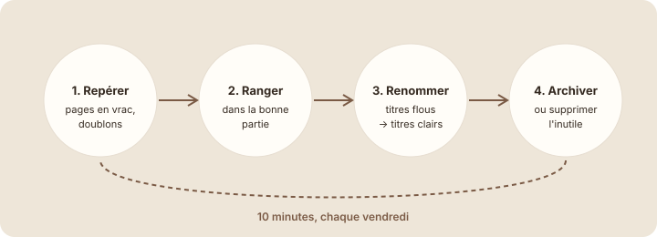

Ranger régulièrement
À la fin de cette leçon, tu sauras garder ton espace clair dans la durée grâce à une courte routine de rangement.
Étape 1 : comprendre
Même bien construit, un espace se dérègle : une page créée en vitesse, un brouillon oublié, un compte rendu rangé au mauvais endroit. Ce n'est pas grave, à condition de ranger régulièrement, un peu comme on vide sa boîte mail.
Une routine de dix minutes, chaque vendredi par exemple, suffit. Elle tient en quatre gestes :
- Repérer les pages en vrac, au mauvais niveau ou en double ;
- Ranger chacune dans la bonne partie, avec « Déplacer vers » (module 3) ;
- Renommer les titres flous (leçon 6.2) ;
- Archiver ou supprimer ce qui ne sert plus.
Archiver, dans Notion, c'est simple : un projet terminé reste dans la base avec le statut « Terminé », et la vue par défaut le cache grâce à un filtre. Pour des pages, crée une sous-page « Archives » dans la partie concernée. On ne supprime que ce qui n'a vraiment plus aucune valeur.

Ranger régulièrement : repérer, ranger, renommer, archiver. Dix minutes par semaine évitent le grand ménage.
Attention : dans un espace partagé, ne supprime pas une page créée par un collègue sans lui demander. Dans le doute, déplace-la dans « Archives » et préviens-le avec un commentaire (module 7).
Le rangement du vendredi
C'est vendredi. Voici les pages qu'Emma trouve en vrac dans l'espace de Studio Nova. Pour chacune, choisis où elle doit aller.
Remarque qu'aucune page ne va dans l'Accueil : il oriente, il ne stocke pas.
Ranger ton espace
- Ouvre ta barre latérale et déplie tout « Studio Nova ». Regarde aussi la section « Pages privées » en dehors de « Studio Nova ».
- Pour chaque page en vrac, demande-toi : quelle partie ? Puis utilise ··· et « Déplacer vers » (ou glisse-la).
- Pour une tâche écrite dans une page, recrée-la dans la base « Tâches », puis supprime la page.
- Dans la base « Projets », vérifie que la vue par défaut cache les projets terminés (filtre « Statut n'est pas Terminé »), ou crée une vue « Archives ».
Capture d'écran Notion Vues En cours et Archives · images/captures/m06-vue-archives.png
- Termine en ouvrant la Corbeille : vérifie que tu n'as rien supprimé par erreur.
Astuce : ajoute une tâche récurrente « Rangement de l'espace — 10 min » à la base « Tâches », chaque vendredi. Le rangement devient une habitude d'équipe, pas une corvée.
Étape 4 : vérifier
À retenir
- Dix minutes par semaine : repérer, ranger, renommer, archiver.
- Archiver plutôt que supprimer : statut « Terminé » et vue filtrée, ou sous-page « Archives ».
- Dans un espace partagé, on ne supprime pas la page d'un collègue sans lui demander.
Choisis une réponse avant de valider.
C'est une action à faire : elle devient une entrée de la base Tâches, avec un responsable et une échéance.
Fin du module 6
Exercice récapitulatif du module · dans Notion
Ton espace d'équipe, version pro
Applique tout le module à ta page d'équipe (modules 2 à 5). Coche chaque étape une fois réalisée.
Résultat attendu
Un collègue qui découvre ton espace sait, sans aide, où trouver un projet, une tâche, un document ou un compte rendu. La barre latérale tient sur un écran, sans « Sans titre » ni doublon.
Quiz du module 6
Choisis une réponse avant de valider.
Un bon espace n'est pas le plus rempli : c'est celui où chacun trouve vite ce qu'il cherche.
Choisis une réponse avant de valider.
La vue liée est une fenêtre sur la base : les tâches restent à une seule place.
Choisis une réponse avant de valider.
Archiver, c'est garder l'information accessible tout en la sortant du quotidien. La suppression est réservée à ce qui n'a plus de valeur.